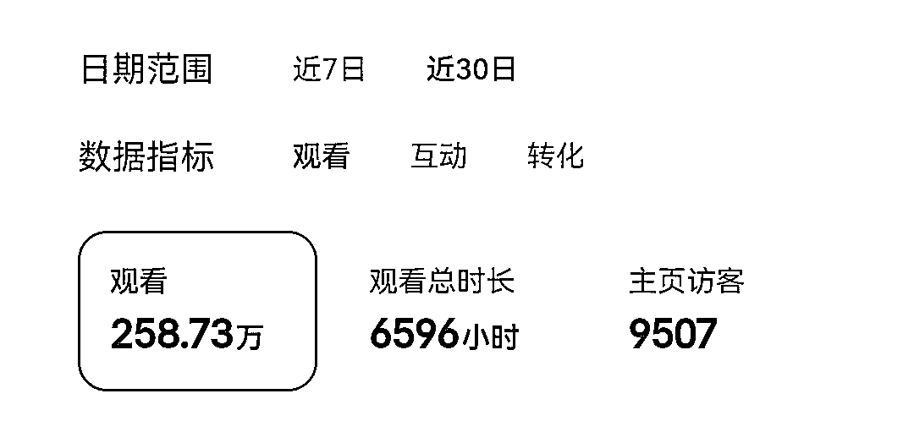
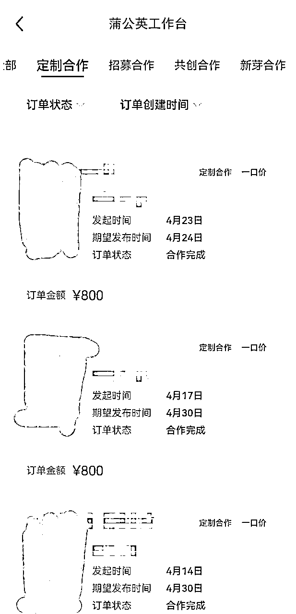
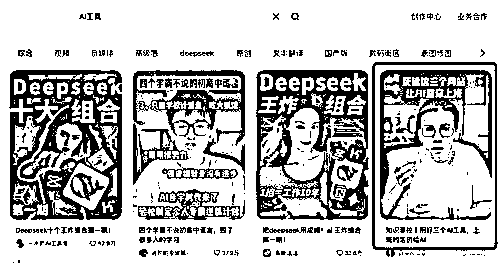
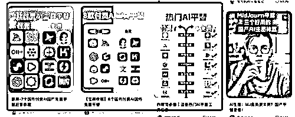
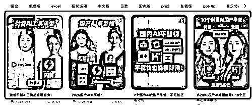
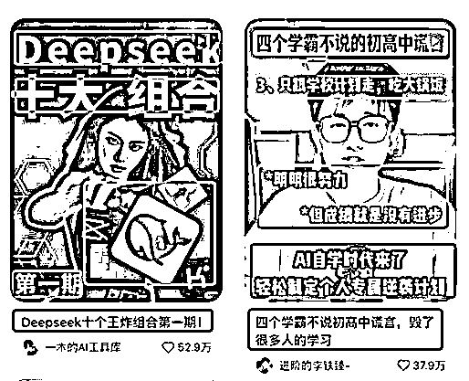
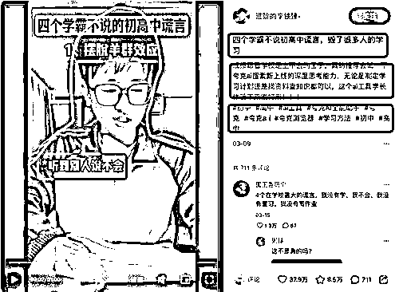

来源：https://qq8alk00fg.feishu.cn/docx/WyGydQ4XroPMS2xgjaIcyT4wnWh
3月份航海前亦仁直播时说：“新人入局AI门槛最低的就是AI自媒体，仍然还有机会”，这句话在我心里种下了种子，此处感谢@亦仁老师~ 不久后在星球里又看到一条风向标异常值，有个圈友说做了几天的AI自媒体账号，几十个粉就开始接商单，我觉得是时候得赶紧入局试试了。
此时3月航海已近半，我就自己看AI自媒体的航海手册，因为几乎不懂AI（除了把AI当搜索引擎用），然后我就把生财所有关于自媒体、AI自媒体的帖子都看了一遍，就下场开干了。
目前为止拿到的结果：
✅ 零粉起号3天开通蒲公英，不到3周涨粉到9000+；
✅ 第3天做出第1条百万播放的爆款；当前账号的总播放量在258w（这里有踩坑，后面会讲）；
✅ 第6天接到第1条商单，目前一共接了4条商单（筛选了价格相对高一点的）（这里也有踩坑，后面会讲）。


所以此处非常感谢@亦仁给我启发和坚定的信念，还非常想要感谢@婧婧，在我拿到第一条商单的时候，婧婧立马语音指点我怎么将这条商单的价值发挥最大，一二三四很详细，包括账号的运营注意事项，我还有一些没做到位，但是接下来我都会一一去做到~非常感恩~@婧婧
还有@小鱼 ，这篇帖子写出来后，小鱼基于新手立场给我提出了几点修改意见，降低新手阅读门槛，我也都一一完善了一下～非常感谢@小鱼～
包括我的鱼丸@李李，加班都在给我提出修改建议添加图片，让我提高易读性方便圈友阅读，才有了现在大家看到的图文并茂，也非常感恩～@李李
接下来我会从账号定位、找对标、找爆款、复刻爆款、接商单几个方面展开分享我的AI自媒体变现历程，力争清晰明了，让你看完就能下场干！
航海手册对于账号定位和分类已经写的很详细了，看完航海手册、我基于自己当前AI零基础的状态、个人兴趣的方向、想要的变现方式、以及短期内希望快速拿到结果的需求，综合下来我给自己初步选出适合自己切入的两个大的方向——AI工具和热点趋势解读。
接下来我还需要了解这两种不同类型账号定位的变现难易程度和天花板来进行最后的综合评估，选择最适合自己切入的角度，此时就要请出AI。这个就是我跟AI沟通做的粗颗粒度的调研，AI生成的报告 ，有想法开始AI自媒体账号的圈友可以参考这份分析报告，然后结合自己的实际情况和变现模式，来选择适合自己的细分方向。我就是据此选择了当前最适合自己的方向（AI工具分享+商单变现），并快速拿到了结果。
P.s. 这是第一步，虽然费点心思，但是很重要！！！
关于找对标，我在学习了生财里小红书/自媒体/AI自媒体各种精华帖并实践后，总结出以下几点原则和方法供你参考：
⚠️ 一定要警惕数据陷阱：不管某个账号做的多精美、数据多好、粉丝量多大，只要变现不好，它就不能成为你的对标！
🌲 并不是它起号时间长你就不能对标，用这个标准是为了优中选优，给自己选个优秀的老师，让自己能够在更短时间内快速起号！
如果你看完仍然觉得不好把握尺度，那我把自己用的具体维度的确切数据，给你参考：
✅ 商单数量：最好选一周≥1条的
✅ 起号时间：1~2个月以内有变现的（知识付费/商单都可以，我的起号标准是变现）
✅ 粉丝量：主对标账号建议选择5000~20000粉之间的，次对标账号主要看爆款
✅ 爆款量：至少有5条千赞以上的作品（这样的新人账号很优秀）
（按照我以往做账号的经历来看，对标这一步如果做到位，成功率基本上就已经到了百分之七八十）
其实经过以上几个环节的严苛筛选，你的爆款选题库就已经全都浮现出来了。
这个环节的操作方法：优先选择主对标账号万赞和千赞以上的笔记，然后选择万粉以内的次对标账号万赞以上的笔记，这一步做完，起码两周的爆款选题都有了。
为了方便大家快速上手，直接给大家先喂点饭：
经过市场反复验证的选题，比如工具小合集，真人出镜和混剪的都爆了

平铺直叙直接推荐工具大合集
付费与平替对比，图文、视频不同形式的爆款


类似这样的还有很多，大家把自己的定位和对标账号找到，自己的爆款选题库自然而然就会自动浮现出来~
分析拆解主要对标账号，画面结构、布局、灯光，人物表情、语速、语调、动作，封面排版、字体、字号、颜色、标题、话题，内容结构、框架、爆点等等，初期都要学习模仿到位，等你做出了几条爆款、也变现了，就可以慢慢加入自己的风格来做差异化了。


⚠️ 一定要做选题的分析，因为爆款总是重复的！搞清楚这些爆了的选题到底核心是什么？解决什么问题？针对什么人群？切入角度是怎样的？然后你就可以举一反三，批量化复制爆款；包括提升自己的网感和创作能力，慢慢独立做出小爆款乃至大爆款了，成为别人的对标。
⚠️ 这里有一点一定要注意：那就是前期像素级模仿时，在内容上一定要留一手，以防你的对标账号见你数据好来投诉你，最好的办法就是在保留爆款里爆的点，同时在爆款的基础上加大信息密度，比如他讲“deepseek能聊天对话”，你就讲“deepseek能聊天对话+豆包能AI生成图片+可灵能AI生成视频”，这样一来平台不会判罚你的账号，毕竟内容差异还是明显的，账号的安全性就提高了。
时间精力允许的话，新号建议一日三更，提高爆率。
接到商单后尽快跟品牌方确认需求，问清楚交付方式（图文or视频）和截止时间，然后提交脚本给品牌方确认。（尽量明确对方需求，脚本呈现尽量全面、清晰，避免来来回回沟通，增加不必要的沟通成本）
这是我目前提交的基本上都能一遍过的视频脚本范本，也分享给大家参考借鉴：
此处有几个注意事项：
1、礼貌沟通、不卑不亢，及时回复处理客户需求，做到事事有回应；一般来说，沟通顺畅、合作愉快，基本上甲方就都愿意复投。
2、关于品牌方提出的跨平台分发和作品授权问题，具体情况具体分析。
个人观点：适当可以将这些作为增值权益给到品牌方，但是如果合作金额太低，且自己已经满足了一些额外的要求，此时品牌方还不想额外支付的费用，一步一步试探你的底线，什么都想白嫖，委婉地拒绝也没有关系，不用有什么心理负担。人家每天要对接那么多博主，加上咱们体量太小，人家也不会放在心上。（以我自己为例，虽然我拒绝了，但是品牌方还是找我复投了）
3、关于报价我踩的坑：因为我合作的都给我复投了，所以对方在问我报价时，我想着前几天合作时1000粉我报200，现在粉丝量涨到了5000，直接涨价500好像不太合适，给人急功近利的感觉不太好，就主动提出保持上次的价格，但其实这等于是在变相给客户打了折扣，结果客户却想要在我主动降价的基础上还要让我给打折……虽然最后我没答应也仍然继续合作了，并且后来我从代理商那知道品牌方其实对我的交付质量很满意。
但这件事我还是仔细的复盘了一下，得出两点教训，也分享给你：
第一、在双方谈判博弈时，千万不要主动让步，自己的每一个退让也要尽量让对方退让一步，只有这样，才能更好的维护好自己的权益。
第二、作为买方永远都有砍价的心态、想要更优惠的价格，所以作为卖方，做好的做法——就是给他留出砍价的余地。要一码归一码，每次跟品牌方谈价格都要基于账号新的数据重新沟通，不要怕麻烦，否则亏的就是自己。
📝 最后填一个关于开头讲到的账号总的200多万播放量、赞藏几十万踩的坑，提醒大家，也是提醒我自己，千万不要被漂亮的数据迷惑住：就是别做着做着就掉进了爆款的陷阱里，就想着怎么做爆款，这本没有错，新账号的确需要爆款才能出现在品牌方面前，才能让品牌方来投广告，但是不能一直做泛流量的爆款，而是同时要加大力度做更加精准的爆款，这个”精准“可以理解为品牌方希望如何展示他的产品的使用场景、使用人群，然后咱们就要围绕这样的人群和使用场景去做爆款，效果才会更好（也可以理解为“伪装广告”）！
以AI工具为例，最好的爆款就是怎么使用这个AI工具用来帮助提高学习和工作效率，演示效果和操作过程，这样的方式最受品牌方青睐，瞄准的人群也就是大学生和想要提高自己的职场打工人，那么接下来要思考的就是这两类人群他们需要什么？关心什么？当下的痛点是什么？再来据此做出更好的作品，吸引到更多的品牌方来找咱们合作。
希望以上分享的内容对大家有所帮助，也祝大家在AI赛道早日拿到自己想要的结果～😉❤️